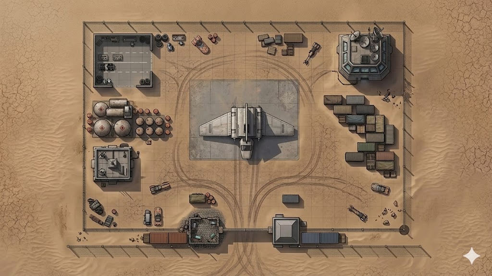

A militarized landing zone on the outskirts of Reestkii, Jakku. Flat desert hardpan enclosed by a chain-link perimeter fence, controlled at the gate by Varga the Hutt's guards and patrolled inside by Imperial stormtroopers. The jurisdictional friction between local criminal authority and Imperial military presence creates gaps a smart crew can exploit. The target is a Lambda-class shuttle sitting on the main pad — its nav computer holds the coordinates to the Vanishing Place on Ajan Kloss, where Admiral Varth is being held.
Walk in through the main gate. Disguise Kit helps. Deception check (Moderate) to approach the shuttle without suspicion. Exploit the jurisdictional gap — Varga's guards at the gate don't verify Imperial credentials, and the stormtroopers at the pad assume anyone past the gate is cleared. The ten-second blind spot between gate containers and pad sightlines is your window.
Cut through the west or east fence during a patrol gap. Thread through the maintenance bay or east cargo cluster. Stealth/Skulduggery (Moderate). The west approach is easier (maintenance bay provides concealment, fuel depot creates a covered corridor) but longer. The east approach is shorter but exposed to the control tower's viewports.
Stage an incident at the main gate, the fuel depot, or the maintenance bay to pull attention. Tech, Deception, or creative approaches (Moderate). The fuel depot is the nuclear option — blowing it creates chaos but also brings every Imperial within earshot running. A subtler distraction at the gate (staged speeder breakdown, fabricated argument) draws the gate guards without alerting the stormtroopers.
Possible but not recommended. Guarantees combat. The Imperial Security Perimeter alarm activates on any unauthorized weapons fire — reinforcements arrive in 3 rounds. The control tower hardline to Arkanis Sector means a priority alert brings heavier assets than stormtroopers. The shuttle's own weapons are powered down but not disabled — a skilled slicer could activate them, but that would bring the entire garrison down on Reestkii.
Trigger: Any unauthorized presence detected.
Effect: Alarm activates. Reinforcements arrive in 3 rounds. All exits monitored.
Mitigation: Bluff, stealth, or neutralize guards before they trigger the alarm.
Trigger: Combat on the open field.
Effect: Open ground with minimal cover. Cargo containers, fuel drums, and parked vehicles provide hard cover at intervals.
Mitigation: Use cargo and vehicles as mobile cover. Fuel drums are explosive.
Trigger: Prolonged physical exertion.
Effect: Jakku heat causes fatigue penalties on extended physical actions without protection.
Mitigation: Coolth Backpack or quick infiltration — don't linger.
Trigger: Tower operator spots unauthorized activity.
Effect: Hardwired priority alert to Arkanis Sector garrison. Faster response than handheld comms. Heavier reinforcements.
Mitigation: Disable the tower, distract the operator, or jam the signal. Each option has tradeoffs.